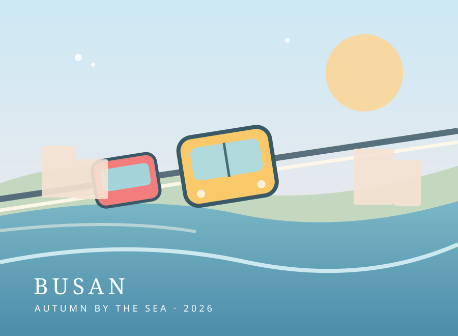

OUR AUTUMN MEMORIES · SOUTH KOREA釜山，
釜山，
沿著海風出發。
這次跟著家人一起參加益靖員工旅遊。彩色山城、海岸列車、膠囊列車、烤肉與小小的購物戰利品，都是我們家的旅行回憶。
✦ 2026.10.30 — 11.03 · 5 DAYS / 4 NIGHTS
01 / THE FAMILY JOURNEY
跟著員旅去看釜山的海。
依「益靖 2026 員工旅遊」旅行社手冊整理的原訂行程。團體景點與自由活動分開標示；實際消費、喜好與臨時變更可寫在下方旅行筆記。
去程 · 10/30（五）BR164 · 14:25 → 17:40桃園 T2 → 釜山金海機場
回程 · 11/03（二）BR163 · 18:55 → 20:25釜山金海機場 → 桃園
這次的旅行方式益靖員工旅遊 × 家庭回憶旅行社：樂觀漫旅 · 5 天 4 夜
Ramada Encore 海雲台
海雲台站與海灘周邊地圖 ↗02 / FIVE DAYS BY THE SEA
五天的釜山故事
選一個日期，重看旅行社安排的當日路線。時間依員旅手冊記錄，並非事後逐項完成驗證。
03 / OUR BUSAN GUIDE
景點、美食與小店收藏
依類別篩選這趟旅程出現的景點和餐廳，按地圖可開啟 Google Maps。
04 / THE LITTLE MOMENTS
留住印象深刻的片刻
勾選你們想收藏的回憶，不是尚未完成的行程。
05 / MEMORY KEEPER
把這趟的故事慢慢寫下來
✎ 我們家的釜山手札
可以記下真正去吃的餐廳、購物品牌、小孩最開心的瞬間，以及照片連結。筆記僅儲存在本機。
♡ 團體旅遊，也是我們家的旅程
這次以婆婆公司的員工旅遊為主，安排了甘川洞、松島、影島、廣安里、海雲台與天空膠囊。自由時間則可以補上購物、美食與照片。
資料來源：妳提供的《261030益靖釜山員旅.pdf》，其中的旅行社時間屬於原訂計畫。網站沒有把未經確認的消費、心得當成已發生的事。